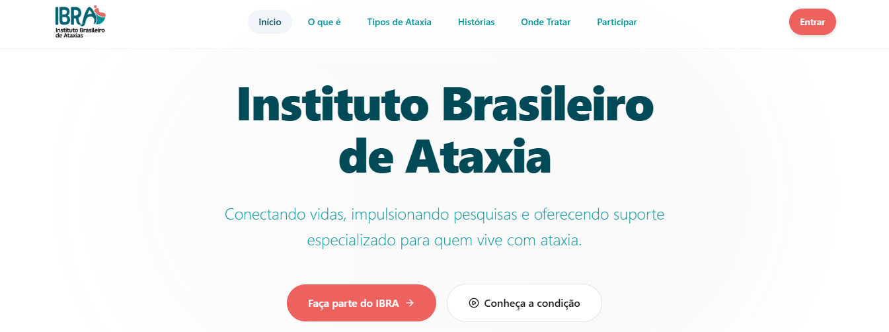
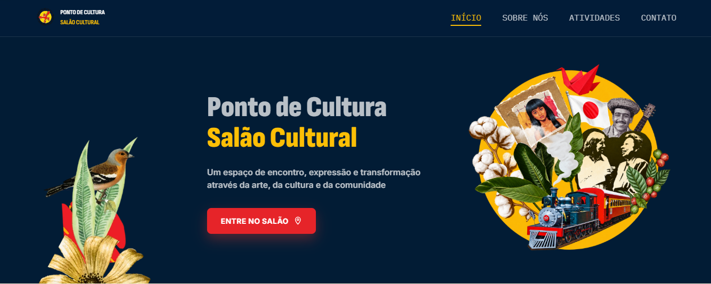

IBRA - Instituição Brasileira de Ataxias
Desenvolvimento de um site institucional para o Instituto Brasileiro de Ataxias (IBRA), com o objetivo de apresentar a instituição, divulgar informações sobre as ataxias e facilitar o acesso do público aos seus conteúdos e serviços. O projeto busca oferecer uma experiência de navegação organizada, acessível e visualmente agradável.

Ponto de Cultura - Salão Cultural
Desenvolvimento de um site para o Ponto de Cultura, com foco na divulgação de atividades culturais, artísticas e educacionais. O projeto apresenta informações sobre a iniciativa por meio de páginas organizadas, buscando valorizar a cultura local e facilitar o acesso dos visitantes aos conteúdos.
